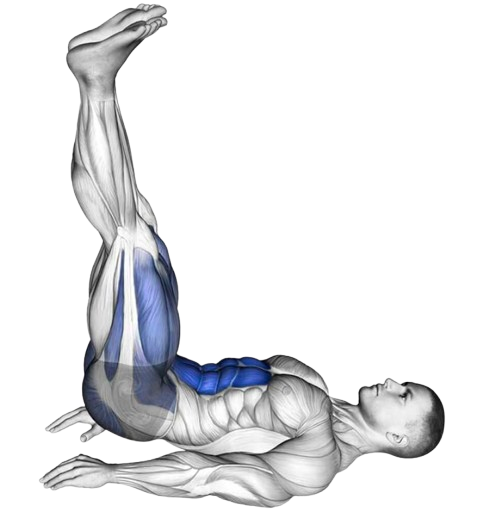
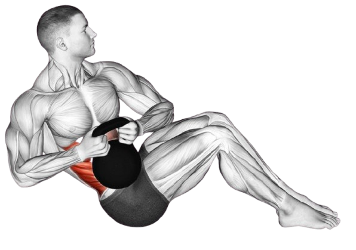
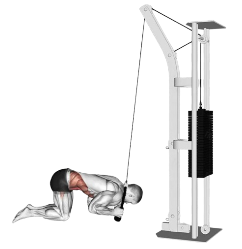

09
Abs
- Rectus abdominis: This pair of muscles goes down either side of the middle of your abdomen from your ribs to the front of your pelvis. They’re divided into two segments by a muscle called the linea alba. Your rectus abdominis hold your internal organs in place and keep your body stable during movement. The rectus abdominis may form bumps sometimes called a “six-pack” when someone has a trim, fit abdomen (“abs”).
- Pyramidalis: This vertical muscle is small and shaped like a triangle. It’s located at the base of your pubic bone. It sits in front of your rectus abdominis and attaches to your linea alba. Your pyramidalis help maintain internal pressure in your abdomen. About 20% of people don’t have pyramidalis muscles.

- External obliques: Your external obliques are a pair of muscles, one on each side of your rectus abdominis. They’re the largest of the flat muscles and sit at the bottom of the stack. They run from the sides of your body toward the middle. Your external obliques allow your trunk to twist from side to side.
- Internal obliques: Your internal obliques are a pair of muscles on top of your external obliques, just inside your hip bones. They’re much thinner and smaller than your external obliques. Like your external obliques, they’re on the sides of your rectus abdominis, running from the sides of your trunk toward the middle. They work with your external oblique muscles to allow your trunk to twist and turn.
- Transversus abdominis: Your transversus abdominis are the deepest of the flat muscles, layered on top of your internal obliques. These muscles help stabilize your trunk and maintain internal abdominal pressure.
- Leg Raises
- Russian Twists
- Cable Crunches
3xfailure (3 sets, until failure) Add weight if you can comfortably go for 1+ minutes
Leg raises are an excellent exercise for targeting the lower abdominal
muscles. The primary goal is to lift the legs, allowing for a controlled and isolated
movement. This exercise
effectively grows the core, especially the lower abs, while minimizing strain on the
lower back.
In addition to engaging the core, leg raises also work the hip flexors and improve
overall stability and control. The padded support allows for proper alignment and reduces
the risk of injury. To maximize benefits, it's important to maintain proper form by keeping
the back straight, engaging the core throughout the movement, and lifting the legs in a
slow, controlled manner.

Leg raises are an excellent exercise for targeting the lower abdominal muscles. The primary goal is to lift the legs, allowing for a controlled and isolated movement. This exercise effectively grows the core, especially the lower abs, while minimizing strain on the lower back.
In addition to engaging the core, leg raises also work the hip flexors and improve overall stability and control. The padded support allows for proper alignment and reduces the risk of injury. To maximize benefits, it's important to maintain proper form by keeping the back straight, engaging the core throughout the movement, and lifting the legs in a slow, controlled manner.
3xfailure (3 sets, until failure) Add weight if you can comfortably go for 1+ minutes
The Russian twist is a versatile core exercise that targets the obliques and deeper core
muscles (also known as the transverse abdominis). This exercise involves twisting the
torso from side to side while sitting on the floor, often with the feet elevated and a
weight or medicine ball in hand for added resistance. It helps improve rotational
strength, stability, and overall core definition.
In addition to strengthening the obliques, the Russian twist enhances balance and
coordination, making it beneficial for various sports and daily activities. Proper form
is essential to avoid strain on the lower back, with a focus on keeping the spine
neutral, engaging the core throughout the movement, and performing the twists in a
controlled manner.

The Russian twist is a versatile core exercise that targets the obliques and deeper core muscles (also known as the transverse abdominis). This exercise involves twisting the torso from side to side while sitting on the floor, often with the feet elevated and a weight or medicine ball in hand for added resistance. It helps improve rotational strength, stability, and overall core definition.
In addition to strengthening the obliques, the Russian twist enhances balance and coordination, making it beneficial for various sports and daily activities. Proper form is essential to avoid strain on the lower back, with a focus on keeping the spine neutral, engaging the core throughout the movement, and performing the twists in a controlled manner.
3x10-12 (3 sets, 10-12 repitions)
The cable crunch is an effective core exercise that targets the abdominal muscles,
particularly the rectus abdominis. Unlike floor crunches, the cable crunch reduces
neck strain by allowing you to focus on using your abs without needing to lift your
head or shoulders. It also helps improve spinal flexion, a fundamental movement for
building a strong, functional core.
This exercise helps strengthen and define the core, improve posture, and enhance
overall abdominal endurance. Proper form is crucial to avoid strain on the lower
back and ensure maximum activation of the ab muscles.

The cable crunch is an effective core exercise that targets the abdominal muscles, particularly the rectus abdominis. Unlike floor crunches, the cable crunch reduces neck strain by allowing you to focus on using your abs without needing to lift your head or shoulders. It also helps improve spinal flexion, a fundamental movement for building a strong, functional core.
This exercise helps strengthen and define the core, improve posture, and enhance overall abdominal endurance. Proper form is crucial to avoid strain on the lower back and ensure maximum activation of the ab muscles.